PoRedoMedia UI changes: features brought back from the old apps
5 October 2026. Where a "before" exists it is on the left. Yellow numbers mark what is new. Captured from the app running in mock mode at 1440×900, so the pictures, titles and insults are placeholders.
Create: trim a video
Two sliders pick the stretch of the video to keep. Everything else in the run counts from the trimmed start.
Before: no trim (image source shown; the video options had no trim either)
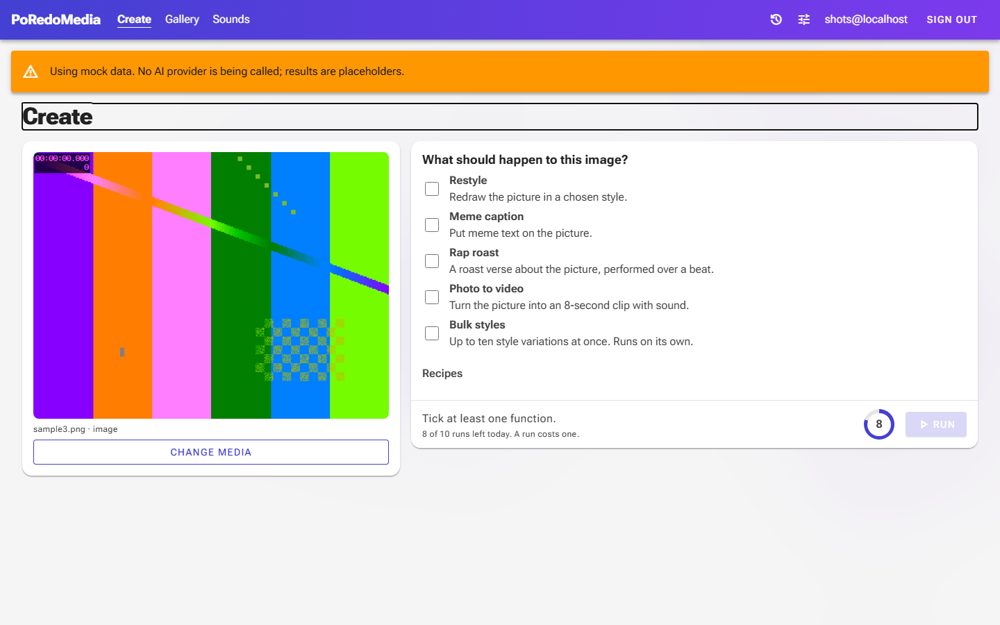
After
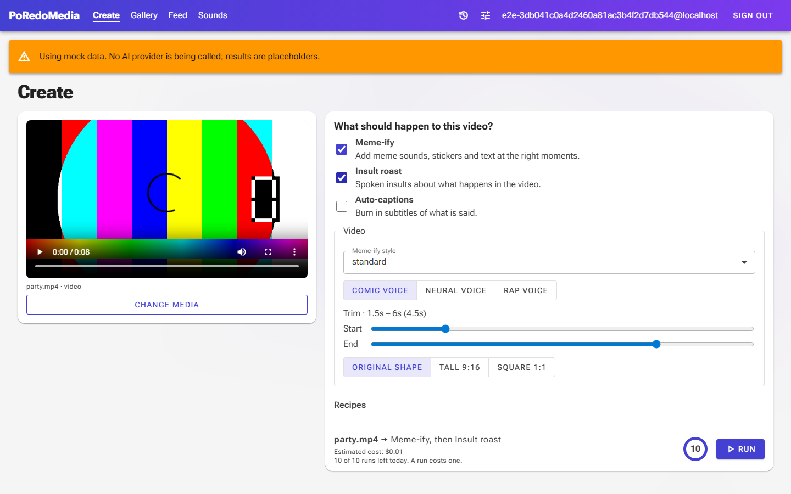
1
1 Trim start and end, with the kept length shown. Shown for videos longer than 3 seconds.
Create: the run log
The lines the run reports are kept with the run, so they are still there after a reload.
Before: step chips and results only
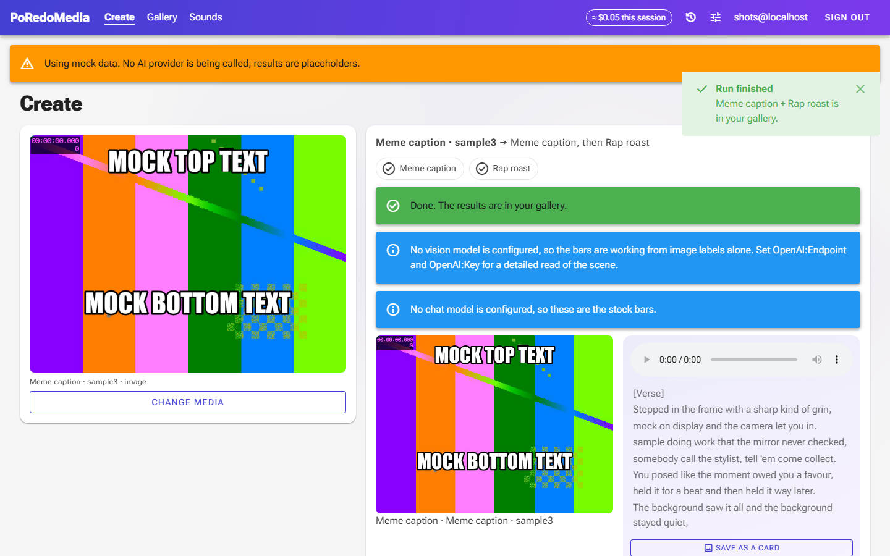
After
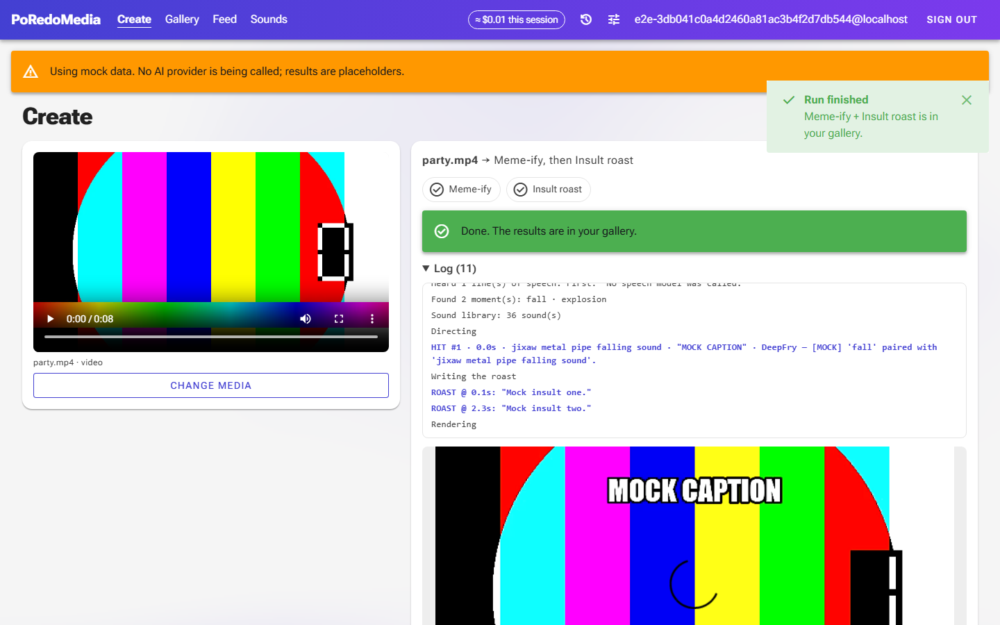
1
1 Log: what was heard and seen, each cue the director placed (HIT), and each roast joke (ROAST).
2 Below the result (scrolled off here): "Download the roast alone (audio)".
Roast stage
The stage for a rap roast of a picture.
Before: lines light up, card export only
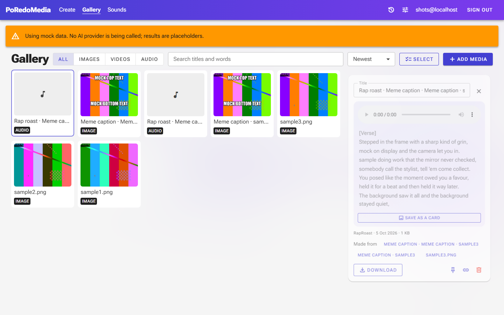
After
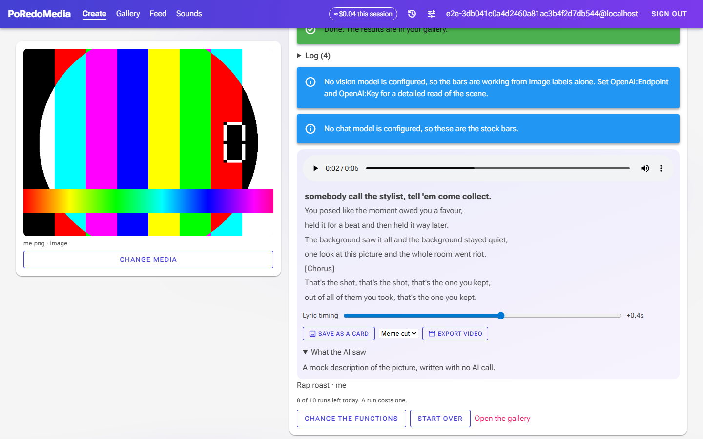
1234
1 Each line is a button: it plays the track from where that line starts.
2 Lyric timing: moves the highlighting up to 3 seconds earlier or later.
3 Export video: records the picture, the current line and the track. Meme cut or Classic.
4 What the AI saw: the description the roast was written from.
Gallery: video exports
A video opened in the gallery.
Before
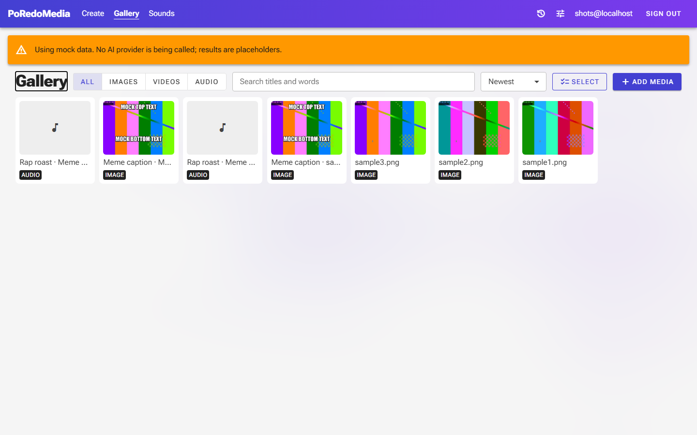
After
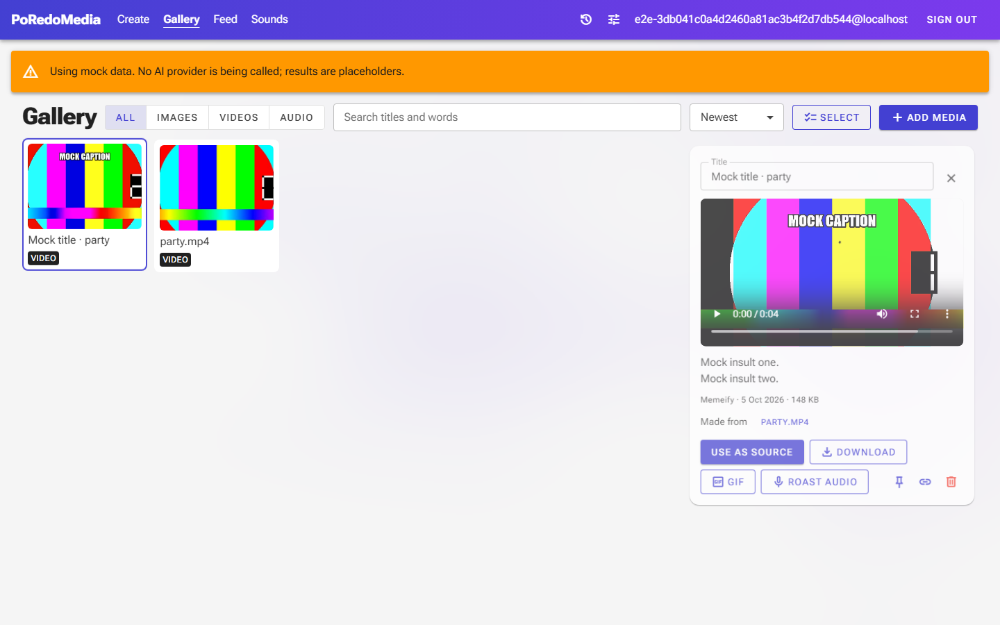
1
1 GIF (first 8 seconds; making it uses one run) and Roast audio (the insults alone). An image gets Copy here instead.
Gallery: right-click menu
Right-click a card for its actions without opening it. With several items selected, Download now gives one ZIP.
After
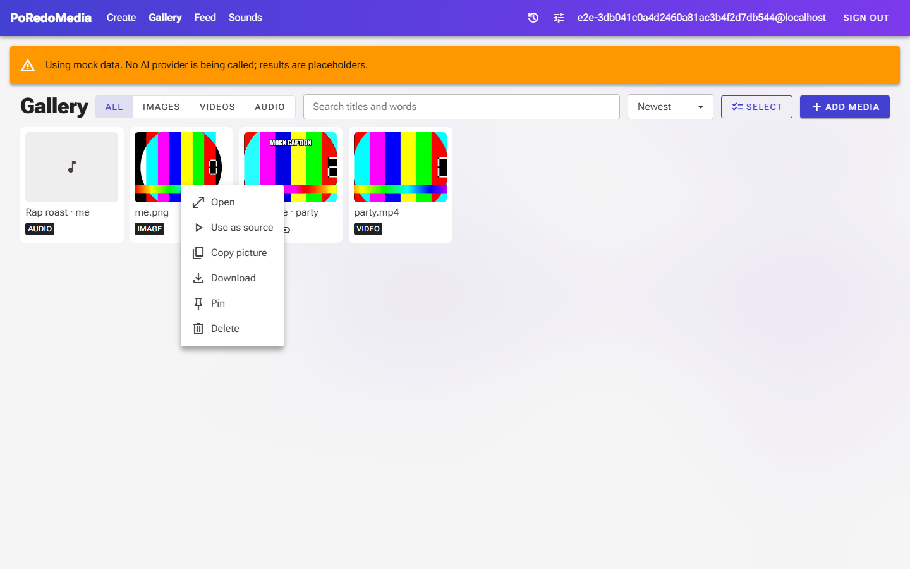
1
1 Open, Use as source, Copy picture (images), Download, Pin, Delete.
Share: post to the feed
Sharing still makes a private link. The new switch also lists the item on the feed.
After
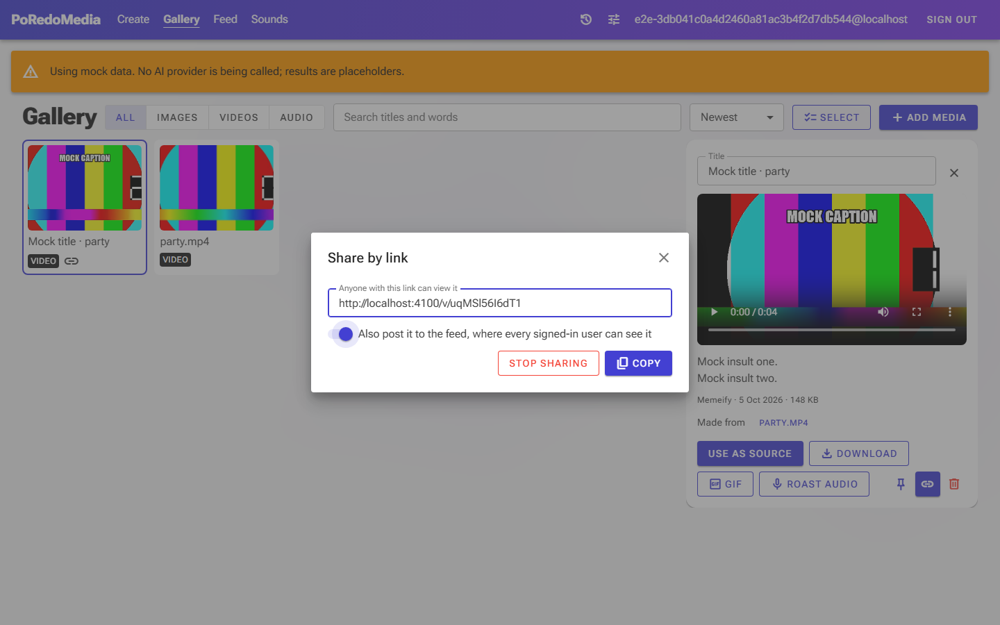
1
1 Off by default. On, every signed-in user can see the item on the Feed page.
Feed (new page)
What signed-in users have posted. The public share page now also shows a view count and, for Meme-ify videos, a remix link.
After
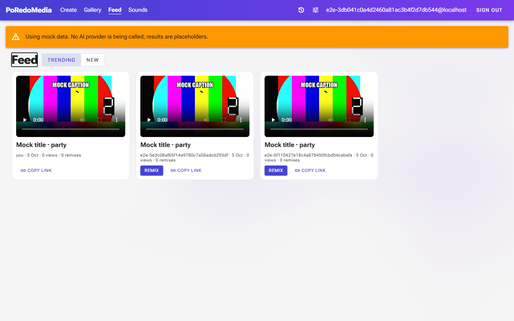
123
1 Feed in the main navigation.
2 Trending or New. Trending favours remixes, then views, and fades with age.
3 A post: player, who posted it, views and remixes. Remix re-times its sounds, captions and stickers onto your own video.